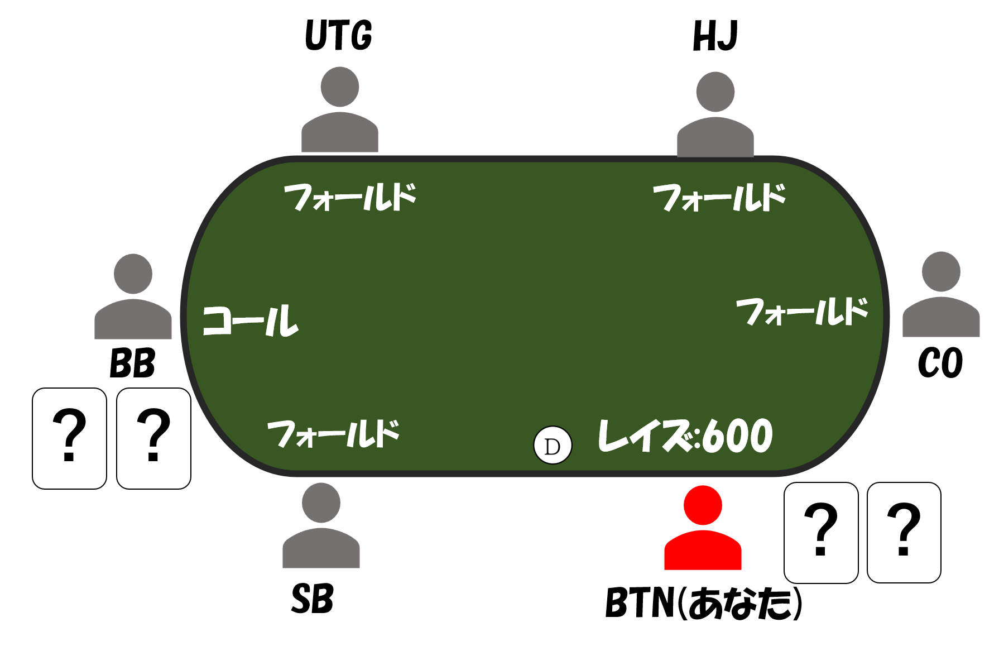
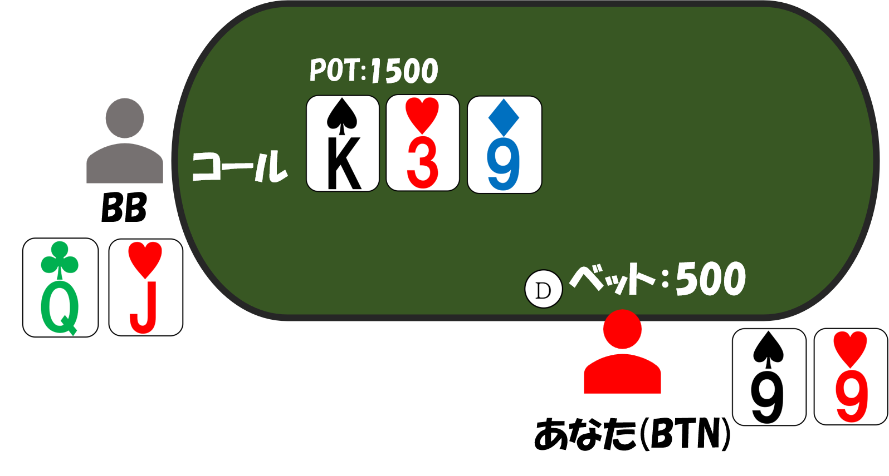
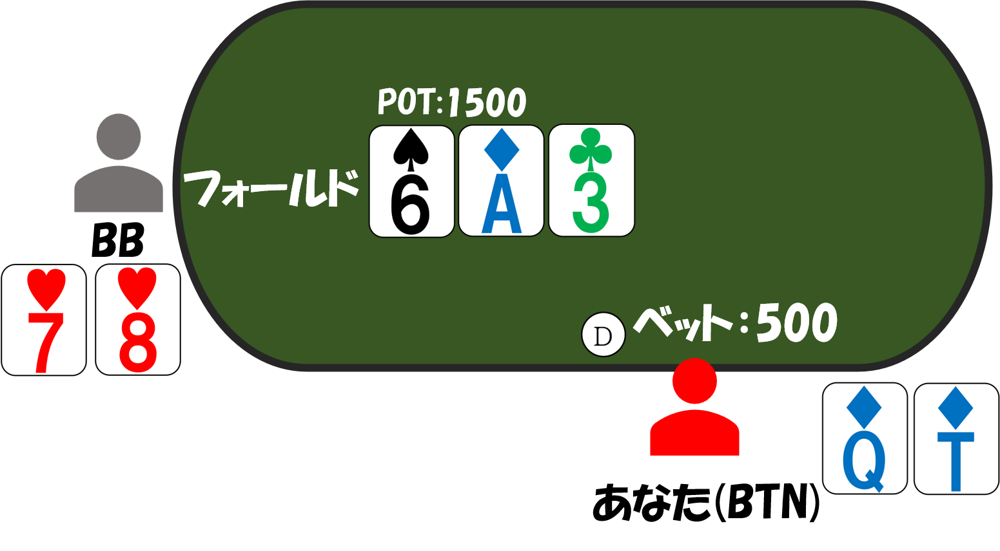
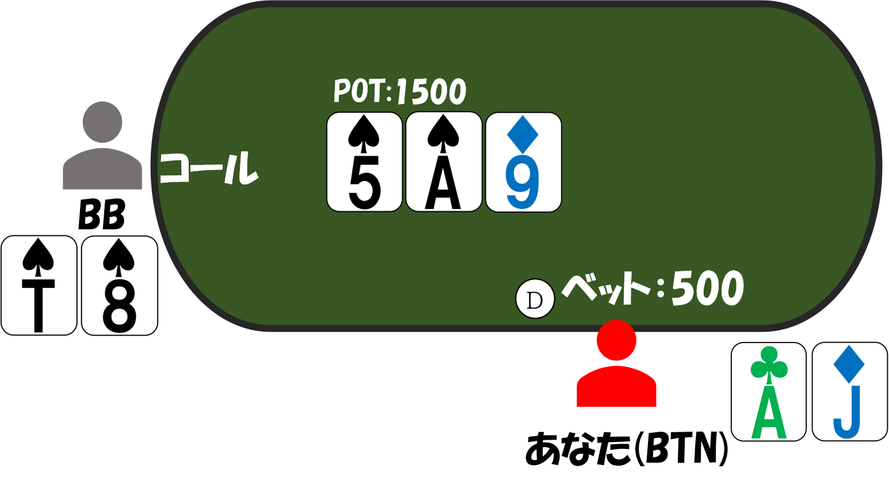
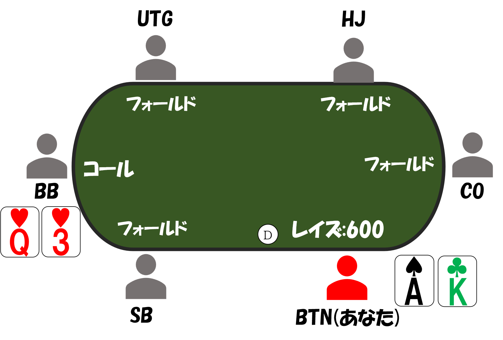
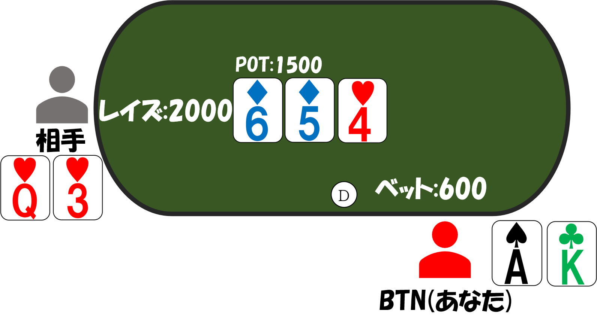
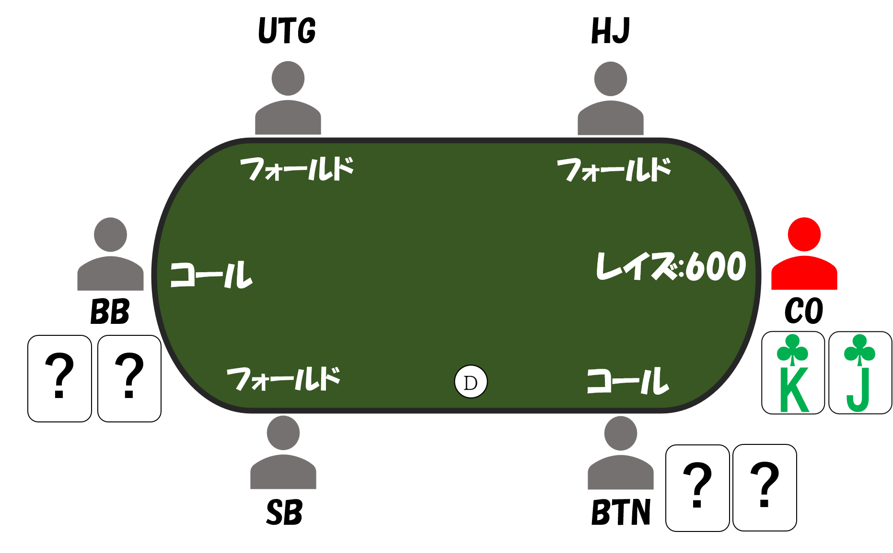
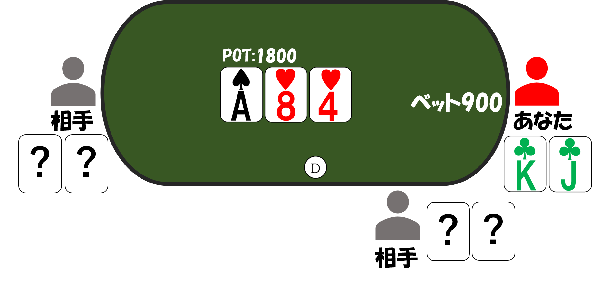

コンティニュエーションベット（CB）について
コンティニュエーションベット(CB)はプリフロップでのアグレッサーが、フロップでも引き続きベットをすることです。
注意すべき点は、
ドンクベット
ではなく、
プリフロップの
アグレッサー
が引き続きベットをすることです。CBはポーカーをプレーする上でとても大事な戦略です。
CBを適切な状況、頻度で打つことによって、利益的にプレーをすることができる一方で、打つことができていないとあなたは結果として多くのチップを失ってしまいます。
本章では、CBを適切に打つことにより享受できるメリット、また打てていない場合のデメリットについて述べ、具体的にどのようなシチュエーションにおいてCBを打つべきか解説していきます。
CBを適正に打つ意味
CBを適正に打てるメリット
・強いハンドを持っている時、ポットを大きくするため
プリフロップの時点で、アグレッサーであるため、多くの強い役を持っています。
そういったハンドでは、相手からバリューを取るためベットをしていきましょう。
・ポットの確保
フロップの時点であなたのハンドが勝っていても、ターン・リバーのカード次第では、相手に逆転される可能性があります。そのため、相手のハンドをフォールドさせて、 ポット を獲得しましょう。
・相手のフリーカードを与えない
フロップでコールした相手に、フラッシュ・ストレートドローがついた場合、自分がチェックしてしまうと、相手はチップを払わないで、ターンカードを見ることができてしまう。
CBを適正に打てないデメリット
・CBを打ちすぎると
相手にレイズされたり、ターン・リバーで、ベットやレイズされた時に、コールやレイズで抵抗することができずに、フォールドすることが多くなってしまいます。
・CBを打たなさすぎると
相手にフリーカードを見せてしまい、ターン、リバーで逆転される可能性が高くなります。
CBを打つシチュエーション
CBを打つシチュエーション
CBは一般的にCBは60%ほどの頻度で打つことが適正値とされています。
以下のいずれかの条件に該当する場合に打つことが多くなります。
・自分のハンドが強い時
・自分のハンドは強くないけどボードが有利な時
・相手にフリーカードを見せたくない時
この3点を踏まえて、CBを打つシチュエーションの具体例を見てみましょう。
CBを打つシチュエーションの具体例
プリフロップ

あなたはBTNにいるとします。BTNからあるハンドでレイズで参加しBBがコールして、フロップに行きました。
3つのシチュエーションのCBの打ち方を解説します。
・自分のハンドが強い時

あなたは♠9❤9を持っているとします。
フロップであなたは9のセットになりました。あなたはすごく強いハンドを持っており、相手のKヒットやQJやQTやJTなどに向けてベット500のCBを打ちます。
このシチュエーションのベットサイズはポットの1/3を打つことが多いです。
・自分のハンドは強くないけどボードが有利な時

あなたは♦Q♦Tを持っているとします。
フロップはAハイボードで、Aハイボードはオリジナルレイザーに有利なボードかつあなたはバックドアフラッシュ・ストレートドローもついているのでベット500のCBを打ちます。
このシチュエーションのベットサイズはポットの1/3を打つことが多いです。
・相手にフリーカードを見せたくない時

あなたは
♣A♦Jを持っているとします。
フロップはAのトップヒットで、相手のAヒット弱キッカーや♠のフラッシュドローや87・86などのガットショットなどに向けてベット500のCBを打ちます。
このシチュエーションのベットサイズは、今回は1/3のサイズを打っていますが、2/3のサイズやチェックの選択肢もあります。
CBを打つべきでないシチュエーション
CBを打つべきでないシチュエーション
・相手が有利のボードで自分のハンドが弱いとき
・マルチウェイ
でハンドが弱いとき
CBを打つべきでないシチュエーションの具体例
プリフロップ

プリフロップであなたはBTNで♠A♣Kを持っていて、レイズで参加してBBがコールしました。
フロップ

フロップは♦6♦5❤4で、相手のチェックに対してベット600のCBを打ち、相手からチェックレイズ2000を受けて、あなたは♠A♣Kをフォールドしました。
このシチュエーションは、チェックした方が利益的です。
フロップの654はBB側に有利なボードであり、あなたのベットに対してレイズが返ってくる可能性が高いです。
あなたのAKは相手のレイズレンジに対して弱くドローもないため、チェックレイズに対してコールすることはできません。
しかし、ターンやリバーでAやKが落ちる可能性もあるためチェックが利益的になります。
次のシチュエーションに行きます。
プリフロップ

プリフロップであなたはCOで♣K♣Jを持っていて、レイズで参加してBTNとBBがコールしました。
フロップ

フロップは♠A❤8❤4でBBのチェックに対して、あなたはベット900のCBを打ちました。
Aハイボードは、アグレッサーであるあなたに有利なボードですが、マルチウェイでは注意する必要があります。
ヘッズアップでは、有利なボードで高頻度にベットすることが利益的でしたが、その主な要因として相手の多くのハンドをフォールドさせれることが挙げられます。
マルチウェイの場合、全ての相手がフォールドする可能性は低いため、あなたのハンドが弱い時はチェックすることが利益的である事が多いです。
相手に合わせたCB戦略
適切な頻度でCBを打つことは利益的になることを説明しましたが、それは相手が適切な頻度とアクションでCBに対応してくる場合の話です。
対応が適切でない相手に対しては、CBの頻度を調節することにより利益を得る事ができます。
代表的な相手の傾向に対するCBについて紹介します。
CBに対してフォールドし過ぎる相手
CBによって相手をフォールドさせる可能性が通常よりも高いため、高い頻度でCBを打つことが利益的になります。
しかし、CBにコールされてしまった場合は相手のハンドは強いことが多いので注意が必要です。
CBに対してコールし過ぎる相手
あなたのCBによって相手をフォールドさせる可能性が低い場合は、ブラフハンドでのCBの頻度を低くする事が利益的です。
あなたがバリューハンドを持っている時は積極的にCBをうち、ブラフハンドを持っている時はCBの頻度を減らしましょう。
CBにコールされてしまった場合は？
多くの場合は、コール側にヒットやドロー系のハンドを持っていることが多いです。
なぜなら、なにも役なしでCBにコールをするのは厳しいからです。
ターンでダブルバレルを打つか悩んだ場合は、ターンのカードで判断しましょう。
ターンで「自分のハンドが強くなった時」や、「アグレッサーに有利なカードが落ちた時」は ダブルバレル
を打つ事が肯定的になります。
しかし、無理せずに諦めることも戦略の一つであることも心がけましょう。
まとめ
本章ではCBを適正に打つ意味や打つシチュエーションについて解説しました。
CBを適切に打てるようになることは、ポーカーをプレイする上でとても重要な事です。
フロップで開かれたボードによって、CBを打つか打たないかをしっかり判断して、バランスよく打てるように心掛けましょう。
そうすることであなたのポーカースキルは格段に上達します。